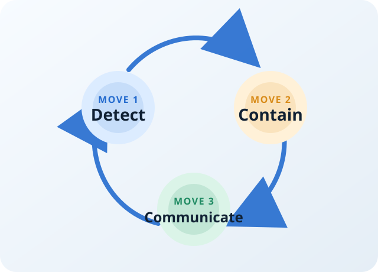

Detect
Confirm the signal, define the impact, and name an incident owner fast.
The Working Sequence

Confirm the signal, define the impact, and name an incident owner fast.
Stop the damage from spreading, even if the perfect fix is not ready yet.
Keep updates short, regular, and factual so people trust the process.